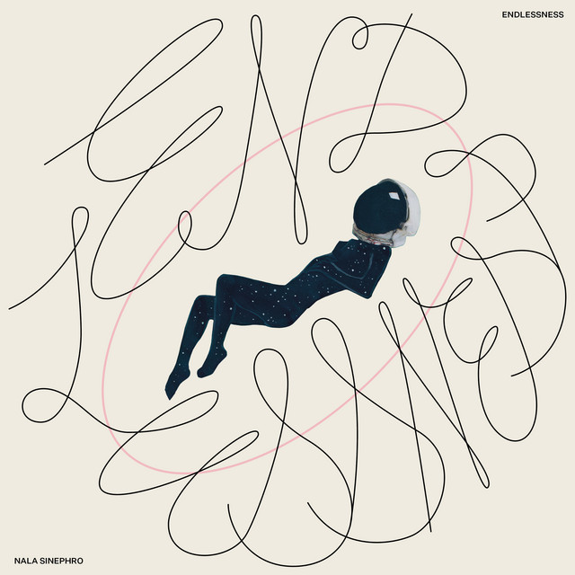

Nala Sinephro - Endlessness



Información del álbum facilitada por discogs.com:
Fecha de lanzamiento: 2024
Géneros: Electronic, Jazz
Estilos: Ambient
Pais: Germany
Votos: Media de 3.5 con 2 votos
Sello: Monolithische Aktion
Recorded At: Ort Der Implosiven Negativität
Recorded By [All Material] - Matthias Mützlitz
Tracklist:
A1. Continuum 1 (feat. James Mollison & Morgan Simpson & Nala Sinephro & Nala Sinephro & Morgan Simpson & James Mollison & Nala Sinephro & Nala Sinephro & Nala Sinephro & Rick David)
A2. Continuum 2 (feat. Lyle Barton & Nala Sinephro & Natcyet Wakili & Nubya Garcia & Sheila Maurice-Grey & Dwayne Kilvington & Nala Sinephro & Natcyet Wakili & Sheila Maurice-Grey & Lyle Barton & Nubya Garcia & Nala Sinephro & Nala Sinephro & Nala Sinephro & Rick David)
B1. Continuum 3 (feat. Nala Sinephro & Nala Sinephro & Lyle Barton & Nala Sinephro & Nala Sinephro & Rick David)
B2. Continuum 4 (feat. Nala Sinephro & Nala Sinephro & Nala Sinephro & Alice Sinephro)
B3. Continuum 5 (feat. Nala Sinephro & Nubya Garcia & Nala Sinephro & Nubya Garcia & Nala Sinephro & Nala Sinephro & Nala Sinephro & Rick David)
B4. Continuum 6 (feat. Lyle Barton & Nala Sinephro & Natcyet Wakili & Nubya Garcia & Nala Sinephro & Natcyet Wakili & Nubya Garcia & Nala Sinephro & Lyle Barton & Nala Sinephro & Nala Sinephro & Rick David)
B5. Continuum 7 (feat. Lyle Barton & Nala Sinephro & Nala Sinephro & Nala Sinephro & Lyle Barton & Nala Sinephro & Nala Sinephro & Rick David)
B6. Continuum 8 (feat. Dwayne Kilvington & Lyle Barton & Nala Sinephro & Natcyet Wakili & Sheila Maurice-Grey & Nala Sinephro & Dwayne Kilvington & Natcyet Wakili & Lyle Barton & Nala Sinephro & Sheila Maurice-Grey & Nala Sinephro & Marc Broer & Vera Kraaijkamp & Nala Sinephro & Rick David)
C1. Continuum 9 (feat. James Mollison & Lyle Barton & Nala Sinephro & Nala Sinephro & James Mollison & Nala Sinephro & Lyle Barton & Nala Sinephro & Rick David)
C2. Continuum 10 (feat. Dwayne Kilvington & Nala Sinephro & Natcyet Wakili & Guy Davie & Nala Sinephro & Dwayne Kilvington & Natcyet Wakili & Nala Sinephro & Nala Sinephro & Nala Sinephro & Rick David)